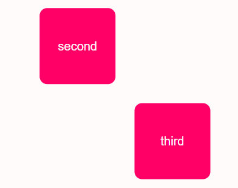
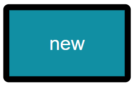
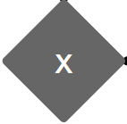

workflow-svg.js
The workflow editor you shouldn't miss
workflow-svg.js is an easy to use library to visualize a workflow and to adapt it. It is very customizable for your own requirements. Learn more about it and try the exciting examples.
The first try
Here is a simple example: you can easily move the workflow entities using "drag and drop".
You can define relationships between workflow entities. It's very easy. Move the cursor to the edge of the entity and a connection point will appear. Do the same with another entity and you have both connected.
That is all: you have defined your first relationship between entities!
Customize to your needs
workflow-svg.js is designed to give you the power to customize it to your needs. You can define everything you need for a workflow chart:
- workflow entities,
- relationships between them (even more complex) and
- labels.
- entity types,
- colors,
- size,
- radius of the corners,
- arrow types,
- add icons (FontAwesome)
In this example you see different colors for the background of entities and their text and a different color for the relationships. The radius of the corners is smaller.
The SVG is in "read-only" mode. Just add "read_only": true in the config and no actions can be done anymore.
This is just a small example of what you can do with workflow-svg.js.
Do you want to see more? Here are some other examples.
How to configure
With workflow-svg.js you can track the changes at any time using callbacks and events. This is very usefull - you have controll over everything all the time.
Change something in the diagram (e.g. connect  and ). You will get the updated JSON as output. It is an example how the json configuration has to look like.
Output:
...change something to see the result here
FAQ
How big is the library?
workflow-svg.js is small and light - at the moment it is about 9 KB. It has only two other dependencies which you need to import.
Is it complex to learn?
workflow-svg.js is easy to use. It has just 4 methods. Simple but usefull.
Which browsers are supported?
The minified version (if you include polyfills) should work on IE11 and for all modern browsers.
Is it a complete editor? Can I change everything?
workflow-svg.js is a component oriented library. You give data inside the component - make changes and can get the result back. If you want to create workflow entities, for example - you have to do that outside of the library and pass it to the update method.
What can I edit with worklfow-svg.js?
You can move entities and labels. You can connect entities with relationships. That is the main purpose of the library. To display data and make changes. But you can configure many other things that should be displayed or how things should behave.
Can I use it with Angular?
Check out the new ng-workflow-svg-js project. It is an Angular wrapper for workflow-svg.js
Can I help?
Yes of course, just contact me! You find more about the author on the github page. I do the project as a hobby and without any commercial support.